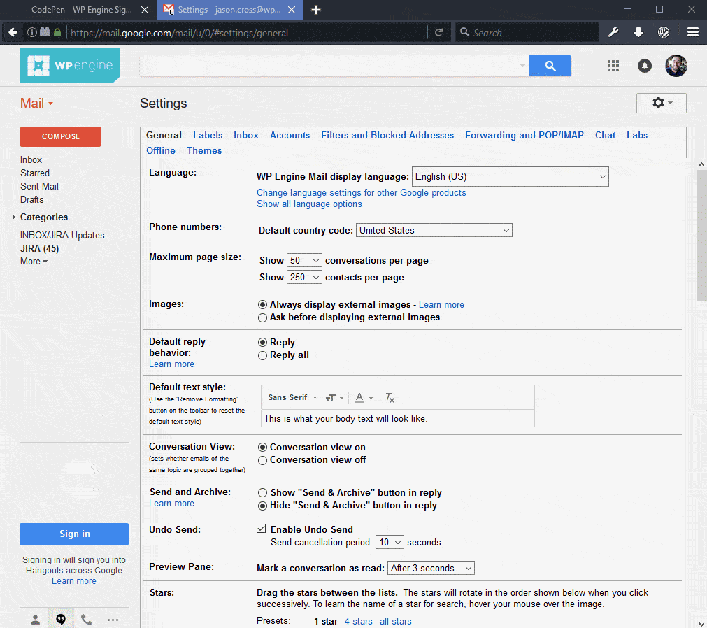
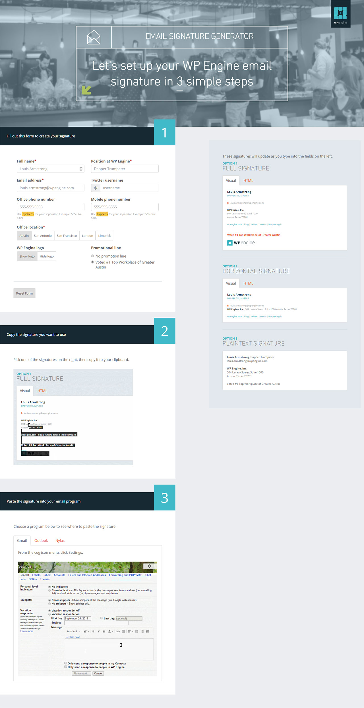
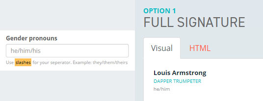

<!DOCTYPE html><html><head><meta charset=UTF-8 /><meta content="IE=edge,chrome=1" http-equiv=X-UA-Compatible /><meta content="width=device-width" name=viewport /><script>var host = "hellojason.net";
if ((host == window.location.host) && (window.location.protocol != "https:"))
  window.location.protocol = "https";</script><meta content="index,follow" name=robots /><link href="../../apple-touch-icon.png?v=Gvm449pRYq" rel=apple-touch-icon sizes=180x180 /><link href="../../favicon-32x32.png?v=Gvm449pRYq" rel=icon sizes=32x32 type="image/png"/><link href="../../favicon-16x16.png?v=Gvm449pRYq" rel=icon sizes=16x16 type="image/png"/><link href="/site.webmanifest?v=Gvm449pRYq" rel=manifest /><link color="#a432f4" href="../../safari-pinned-tab.svg?v=Gvm449pRYq" rel=mask-icon /><link href="../../favicon.ico?v=Gvm449pRYq" rel="shortcut icon"/><meta content="#a432f4" name=msapplication-TileColor /><meta content="#ffffff" name=theme-color /> <title>Hello Jason / WP Engine Email Signature Generator</title><meta content="Design and development portfolio of Jason Cross" name=description /><link href="../../assets/stylesheets/site-fa3f21a6.css" rel=stylesheet /><link href="https://hellojason.net//projects/wpe-email-signature-generator/" rel=canonical /><script>(function(i,s,o,g,r,a,m){i['GoogleAnalyticsObject']=r;i[r]=i[r]||function(){
(i[r].q=i[r].q||[]).push(arguments)},i[r].l=1*new Date();a=s.createElement(o),
m=s.getElementsByTagName(o)[0];a.async=1;a.src=g;m.parentNode.insertBefore(a,m)
})(window,document,'script','//www.google-analytics.com/analytics.js','ga');

ga('create', 'UA-48926813-1', 'auto');
ga('send', 'pageview');
ga('set', 'anonymizeIp', true);</script></head><body class="projects projects_wpe-email-signature-generator projects_wpe-email-signature-generator_index"></body><header class=banner role=banner><div id=primary-navigation role=navigation><div class=navbar-header><a class=logo href="/" title="Hello Jason Portfolio"><svg id=hellojason-logo xmlns="http://www.w3.org/2000/svg" width="0.56in" height="0.56in" viewBox="0 0 40.6 40.6"><defs><style>.cls-1{fill:#fbac2d;}</style></defs><title>hello-jason-logo</title><path class=cls-1 d="M9.3,13.1a4.11,4.11,0,0,1,2.8-.7H29.9a4.42,4.42,0,0,1,2.9.7,3.39,3.39,0,0,1,.8,2.5v0.5H28.4A1.43,1.43,0,0,0,27,17.5v0.9q3.75,0,4.8.9c0.7,0.6.9,2.9,0.9,2.9a28.1,28.1,0,0,1,.1,2.9V29a1.43,1.43,0,0,1-1.4,1.4h-8A1.43,1.43,0,0,1,22,29V28.1c0-1.9.2-3.1,0.7-3.6a3.37,3.37,0,0,1,1.7-.6,1.42,1.42,0,0,0,1.4-1.2,1.33,1.33,0,0,0-1.4-1.1H16.9A1.43,1.43,0,0,0,15.5,23v0.7c1.6,0,2.7.2,3.2,0.7a5.14,5.14,0,0,1,.6,2.3,23.48,23.48,0,0,1,.1,2.6A1.33,1.33,0,0,1,18,30.4H11A1.43,1.43,0,0,1,9.6,29V23.5c0-2.2.3-3.5,0.8-4.1a4.15,4.15,0,0,1,1.8-.7,15.26,15.26,0,0,1,1.8-.1,1.23,1.23,0,0,0,.4-1.2A1.33,1.33,0,0,0,13,16.2H8.5V15.5a2.92,2.92,0,0,1,.8-2.4" transform="translate(-0.7 -0.7)"/><path class=cls-1 d="M21,3.4A17.6,17.6,0,1,1,3.4,21,17.63,17.63,0,0,1,21,3.4m0-2.7A20.3,20.3,0,1,0,41.3,21,20.31,20.31,0,0,0,21,.7h0Z" transform="translate(-0.7 -0.7)"/></svg><span class=tagline>Hello, I'm Jason.</span></a></div><div id=primary-container><ul class=nav><li class=nav-item-blog><a href='/'>Blog</a></li><li class=nav-item-projects><a href='/projects/'>Projects</a></li><li class=nav-item-about><a href='/about/'>About</a></li></ul></div></div><div class=container><h1 class=title>WP Engine Email Signature Generator</h1></div><svg class=icon-arrow-downright xmlns="http://www.w3.org/2000/svg" width="8.4" height="8.5" viewBox="0 0 8.4 8.5"><title>icon-arrow-downright</title><path d="M2.3,8.5,0,6.1H4.5L0,1.6,1.6,0,6.1,4.5V0L8.4,2.3V8.5Z"/></svg></header></html><main class=container role=main><section id=project-single><aside><dl><dt>Project</dt><dd>WP Engine Email Signature Generator</dd><dt>Year</dt><dd>2016</dd><dt>Software</dt><dd>jQuery</dd><dt>Roles</dt><dd>Design, Development</dd></dl><hr></hr><h3>Demo</h3><a href="http://wpeng.in/signature">Try it out</a></aside><main role=main><h2>Inconsistent email signatures</h2><p>WP Engine employees had not used the same email signatures since the company's inception; each department created their own over the years, causing huge inconsistencies.</p><h2>Researching options</h2><p>I had assisted with generating consistent email signatures <a href="https://immense.net/deploying-unified-email-signature-template-outlook/">at my previous job</a> by leveraging Exchange Server and Powershell, but WP Engine uses Google Apps. So, I met with the IT team to discuss possible ways to deploy something across the company. We ultimately decided to provide a tool that would allow employees to generate their own signatures and help themselves.</p><h2>Prototyping</h2><p>Art Director <a href="http://www.elanadweinberg.com/">Elana Weinberg</a> designed a lovely set of email signatures and vetted them with the leadership team, then she handed it off to me for development. I decided the <abbr title="Minimum Viable Product">MVP</abbr> needed to remain simple, so I built the frontend onto Bootstrap and added a realtime update functionality with some jQuery.</p><p>I decided to always show the output side of the interface, in the generated signature section, with default information that is obviously not the person using the form. This signifies which fields require editing while giving instant gratification as the user fills the form.</p>  <noscript></noscript><h2>Testing</h2><p>I sent documentation and an instructional GIF to the entire marketing team for testing, asking them to use it in their email programs and send me a demo. This trial exposed a few issues with untested programs, like Apple Mail and Nylas N1.</p><h2>Final Design</h2><p>Once the functionality and fields were locked in, I designed a proper interface for the signature generator. My primary focus was to teach the user how to use the tool via the layout, so there would be as little friction as possible with adoption of the new signatures across the company.</p>  <noscript></noscript><hr/><h2>Improvements (2019 update)</h2><h3>Easier maintenance</h3><p>Maintaining this app has been a challenge. I wrote it quickly using jQuery during a hackathon, and it was deployed before refactoring. Basic tasks, like adding a new office location, were cumbersome to complete. So, I decided to use another hackathon to solve that problem by swapping to a JavaScript framework with native data binding.</p><p>Early attempts to use React proved difficult, since it wants you to write your app from scratch in that framework. Instead, I implemented VueJS and transitioned each form field over to it, one at a time. I knocked it out in 2 days, updated the documentation, and now it's much easier for any developer on the team to make changes to the project.</p><h3>Inclusion</h3><p>WP Engine has an internal community called Engine For Good, which allows employees to create community groups that are important to us. I partnered with our Pride group to add gender pronouns to our company email signatures, hoping to encourage openness and normalcy around how individuals want to be identified.</p>  <noscript></noscript><hr/><h2>Check it out</h2><p>Try the tool at <a href="http://wpeng.in/signature">http://wpeng.in/signature</a></p></main></section></main><footer id=footer></footer><script src="//assets.codepen.io/assets/embed/ei.js" async=true></script>